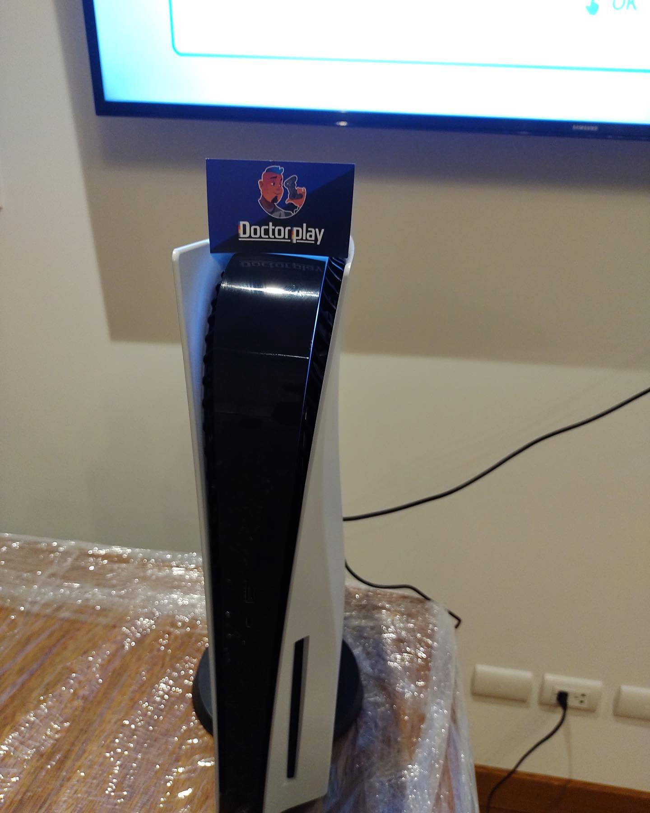
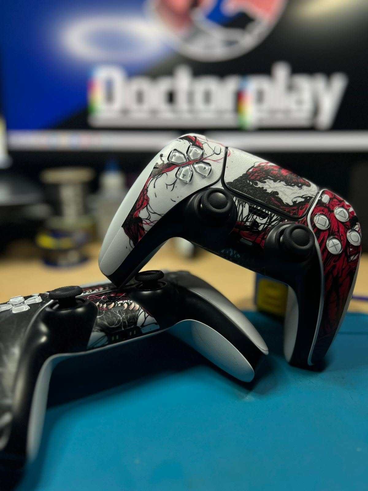

01
SONYPLAYSTATION
PS4, PS4 Pro y PS5. HDMI, lector, fuente, limpieza, almacenamiento y fallos de encendido.
CONSULTAR ↗Soluciones técnicas para tu consola, mando o accesorio. Trabajamos sobre el problema real y te explicamos cada paso.
CUÉNTANOS LA AVERÍA ↗


Hardware, conectividad, temperatura, imagen, alimentación y controles.
PS4, PS4 Pro y PS5. HDMI, lector, fuente, limpieza, almacenamiento y fallos de encendido.
CONSULTAR ↗Xbox One, Series S y Series X. Vídeo, ventilación, fuente, SSD y conectividad.
CONSULTAR ↗ NINTENDO
NINTENDOSwitch, Lite y OLED. USB-C, pantalla, batería, lector, ventilador y Joy-Con.
CONSULTAR ↗CONTROLESDrift, botones, gatillos, batería, conectores y daños por golpes o uso.
CONSULTAR ↗No hace falta. Cuéntanos qué síntomas presenta y nosotros localizamos el origen.
DIAGNÓSTICO DIRECTO ↗Escuchamos el problema.
Localizamos la avería.
Intervenimos con precisión.
Probada y con garantía.